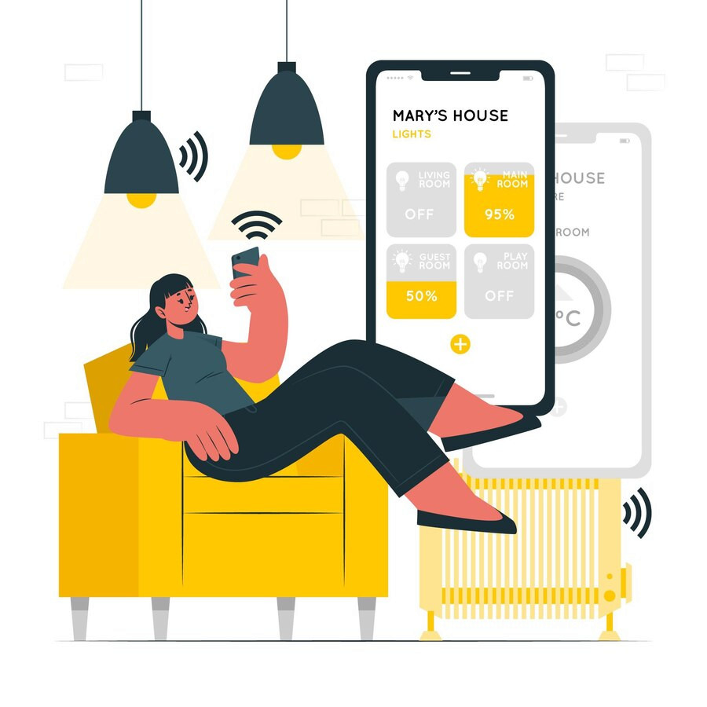

Zdobyczą nowoczesnych technologii są dzisiaj również ekrany dotykowe, które pojawiają się nie tylko w telefonach komórkowych, ale i w szeregu innych urządzeń, w tym w sprzęcie RTV oraz AGD. Coraz chętnie wybieramy nowoczesne urządzenia z ekranami dotykowymi, które ułatwiają korzystanie z nich oraz pozwalają na zastosowanie w urządzeniach większej ilości nowoczesnych funkcji. Telefon komórkowy z ekranem dotykowym jest czymś normalnym, a tego typu ekrany pojawiają się także w pralkach, mikrofalówkach, zmywarkach.

Inteligentny dom nazywany jest inaczej smartdomem. Oznacza zbiór systemów i urządzeń służących do automatyki domu. Jest to dom, z którym domownicy mogą się połączyć zdalnie, by wydawać różnego rodzaju polecenia podłączonym urządzeniom. Podstawą tego nowoczesnego rozwiązania jest tzw. internet rzeczy. Jest to koncepcja połączenia przedmiotów w jedną sieć, które mogą się komunikować między sobą i z użytkownikami. Choć założenia inteligentnego domu brzmią bardzo skomplikowanie, w rzeczywistości użytkowanie go jest bardzo proste. Jedynym trudnym aspektem jest technologiczna strona przedsięwzięcia.Podstawowymi rozwiązaniami smartdomu są gniazdka elektryczne, które pozwalają na ustalanie harmonogramu włączania danego urządzenia. Dzięki inteligentnym kontaktom istnieje możliwość monitorowania poziomu baterii urządzenia lub zużycia energii. Inteligentne gniazdka pozwalają na zdalne odłączenie urządzenia, co zapewnia szczególną ochronę domu i domowników. Do inteligentnego systemu włącza się również oświetlenie, którym można sterować za pomocą smartfona lub tabletu. Do smartsystemu można podłączyć również ogrzewanie i monitoring. Nad bezpieczeństwem domu czuwać będą odpowiednie czujniki: dymu, gazu czy zalania. Tradycyjny alarm może zastąpić specjalny system alarmowy z czujnikami ruchu, otwierania drzwi lub okien, które pod nieobecność właściciela będą monitorowały posiadłość.Obecnie firmy oferują szereg spersonalizowanych aplikacji, które pomogą w obsłudze wszystkich smarturządzeń.